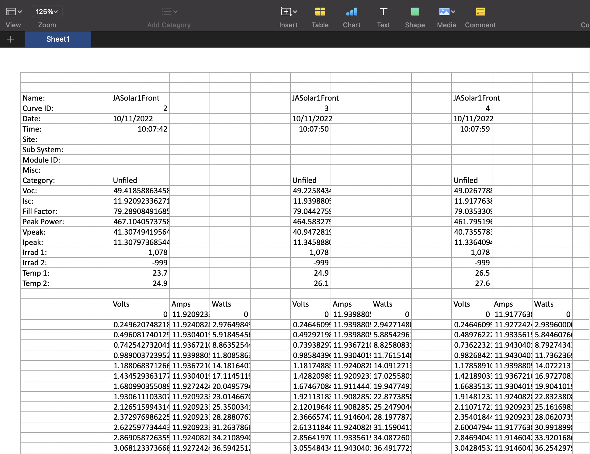
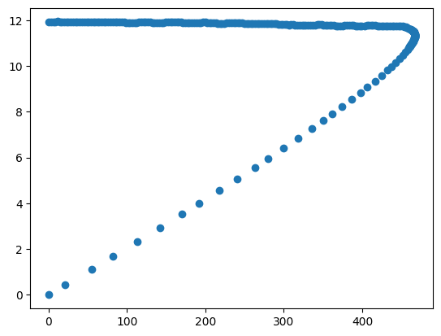

import pandas as pd
import numpy as np
import matplotlib.pyplot as plt004 Separar curvas de un excel
Datos

f = '../data/001_raw/004_SepararCurvas/Curvas_JASolar1_Continuo.xlsx'
def importa_PV_IV(f,columnas,saltar_renglones=2):
df = pd.read_excel(f,sheet_name="Sheet1",
usecols=columnas,
skiprows=saltar_renglones,
header=None,index_col=0)
nombre = df.loc['Name:'][columnas[1]] + str(df.loc['Curve ID:'][columnas[1]])
heading = df.iloc[:19]
del heading[columnas[2]]
del heading[columnas[3]]
heading.columns = [nombre]
data = df.iloc[20:]
columnas = data.iloc[0].to_list()
data = df.iloc[21:]
data.columns = columnas
data.reset_index(inplace=True)
del data[0]
data_dict = {'datos':data}
diccionario = heading.to_dict()
diccionario[nombre].update(data_dict)
return diccionarioe1 = importa_PV_IV(f,[0,1,2,3])
e1{'JASolar1Front2': {'Name:': 'JASolar1Front',
'Curve ID:': 2,
'Date:': '10/11/2022',
'Time:': datetime.datetime(1900, 1, 1, 10, 7, 42),
'Site:': nan,
'Sub System:': nan,
'Module ID:': nan,
'Misc:': nan,
'Category:': 'Unfiled',
'Voc:': 49.4185886345804,
'Isc:': 11.9209233627189,
'Fill Factor:': 79.2890849168578,
'Peak Power:': 467.104057375869,
'Vpeak:': 41.3074941956438,
'Ipeak:': 11.3079736854415,
'Irrad 1:': 1078,
'Irrad 2:': -999,
'Temp 1:': 23.7,
'Temp 2:': 24.9,
'datos': Volts Amps Watts
0 0 11.920923 0
1 0.249621 11.924083 2.976498
2 0.496082 11.930402 5.918455
3 0.742543 11.936721 8.863525
4 0.989004 11.939881 11.808586
.. ... ... ...
246 48.578093 2.322258 112.810856
247 48.824554 1.674553 81.759316
248 49.023619 1.127954 55.296377
249 49.27008 0.432856 21.32686
250 49.418589 0 0
[251 rows x 3 columns]}}e2 = importa_PV_IV(f,[0,5,6,7])
e2{'JASolar1Front3': {'Name:': 'JASolar1Front',
'Curve ID:': 3,
'Date:': '10/11/2022',
'Time:': datetime.datetime(1900, 1, 1, 10, 7, 50),
'Site:': nan,
'Sub System:': nan,
'Module ID:': nan,
'Misc:': nan,
'Category:': 'Unfiled',
'Voc:': 49.2258434998803,
'Isc:': 11.9398805692326,
'Fill Factor:': 79.0442759700488,
'Peak Power:': 464.583279244051,
'Vpeak:': 40.9472819766961,
'Ipeak:': 11.345888098469,
'Irrad 1:': 1078,
'Irrad 2:': -999,
'Temp 1:': 24.9,
'Temp 2:': 26.1,
'datos': Volts Amps Watts
0 0 11.939881 0
1 0.246461 11.939881 2.942715
2 0.492922 11.939881 5.88543
3 0.739383 11.936721 8.825808
4 0.985844 11.930402 11.761515
.. ... ... ...
246 48.388508 2.30646 111.606164
247 48.634969 1.655596 80.519862
248 48.830874 1.124794 54.924686
249 49.077335 0.432856 21.243429
250 49.225843 0 0
[251 rows x 3 columns]}}fig, ax = plt.subplots()
ax.scatter(e1['JASolar1Front2']['datos']['Watts'],
e1['JASolar1Front2']['datos']['Amps'])<matplotlib.collections.PathCollection at 0x120de14e0>
e1.tAttributeError: 'dict' object has no attribute 't'